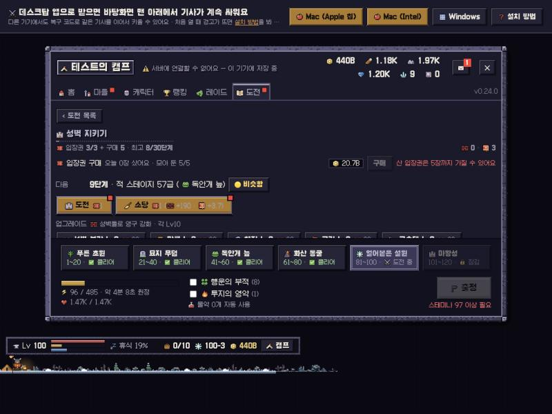

🏰 성벽 지키기 — 단계 축소 1~100 → 1~30
2026-10-16 · 스펙 docs/specs/castle-defense.md "단계 축소" · 상태: 구현, 사용자 확인 대기
요지
- 요청: "단계가 너무 잘게 쪼개져 깨는 게 너무 쉽다" → 30단계로 축소 선택.
- 단계 L 의 적 스테이지: −8 + 2L (1~100) → 7L − 6 (1~30). 적 범위는 똑같이 1~204.
- 한 단계 오를 때 적 체력·공격력 합쳐 약 ×1.12 → 약 ×2.
- 보상: 🧱 = 점수 × (1 + L/30), 📕 = 웨이브 × (0.34 + 0.0033L) — 끝 단계 보상은 옛 100단계와 같음.
- 옛 세이브 최고 단계는 같은 적 스테이지 이하인 새 단계로 (33 → 9, 42 → 11).
단계 ↔ 적 스테이지
새 단계당 스테이지 · 시작 · 최대 단계
회색 = 옛 (−8 + 2L), 금색 = 새. 가로축 = 적 스테이지, 점 하나가 한 단계.
간이 시뮬 한계 단계 (중앙값, node dev/castle-sim.js)
| 내 최고 스테이지 | 40 | 60 | 80 | 100 | 120 | 140 | 160 | 180 | 200 |
|---|---|---|---|---|---|---|---|---|---|
| 옛 · 업그레이드 0 | 13 | 19 | 22 | 29 | 39 | 46 | 54 | 65 | 74 |
| 새 · 업그레이드 0 | 3 | 5 | 6 | 8 | 11 | 13 | 15 | 18 | 20 |
| 옛 · 전부 Lv10 | 20 | 25 | 31 | 42 | 51 | 60 | 69 | 80 | 89 |
| 새 · 전부 Lv10 | 5 | 7 | 8 | 11 | 14 | 16 | 19 | 22 | 25 |
실측 (봇 세이브 최고 스테이지 100, 업그레이드 0, 기름 안 씀)
| 계열 | 성공 | 실패 | 시뮬 한계 | 옛 규칙 한계 (적 스테이지) |
|---|---|---|---|---|
| 전쟁군주 (근접 광역) | 9단계 (적 57) · 쓰러짐 1 | 10단계 붕괴 | 10 | 34 (적 60) |
| 신궁 (원거리 단일) | 5단계 (적 29) · 쓰러짐 1 | 6단계 붕괴 | 7 | 22 (적 36) |
진행 봇 (14일 · 2시드, 옛 HEAD → 새)
| 항목 | 2일 | 4일 | 7일 | 10일 | 14일 |
|---|---|---|---|---|---|
| 성벽 최고 단계 | 9 → 6 | 12 → 12 | 21 → 21 | ? → 30 (끝) | 42 → 30 |
| 📕 하루 | 12.2 → 13.2 | ||||
| 업그레이드 완료 (열린 뒤) | 6.9일 → 5.9일 | ||||
봇은 사냥이 아주 빨라(4일 스테이지 200+, 14일 367) 옛·새 모두 입장권 3장/일이 상한이라 매판 성공한다. 실제 유저 기준으로는 최고 100이 옛 규칙에서 29단계까지 열흘 내내 성공만 했다면, 지금은 8단계(3일) 뒤부터 사냥 약 7스테이지마다 1단계씩 열린다.
화면

결정할 것
- 업그레이드 완료가 봇 기준 6.9 → 5.9일로 하루 빨라짐 (10-14 결정 약 6.8일). 맞추려면 🧱 배율 1 + L/45 정도.
- 빠른 유저는 30단계(적 204)에 열흘 만에 닿음 — 끝을 더 늘릴지 (예: 40단계 = 적 274).